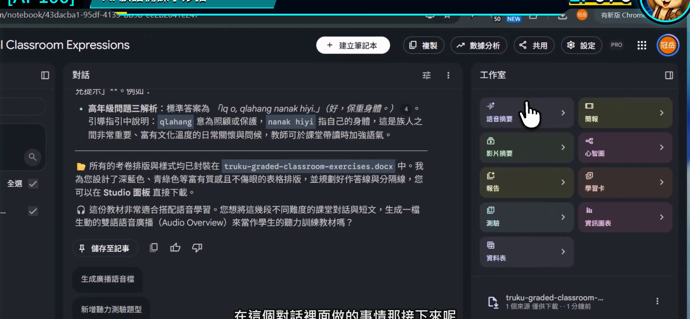
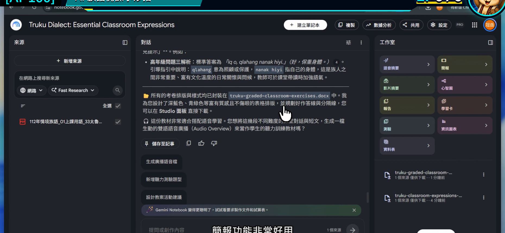
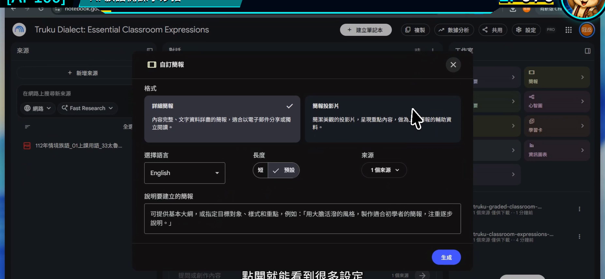
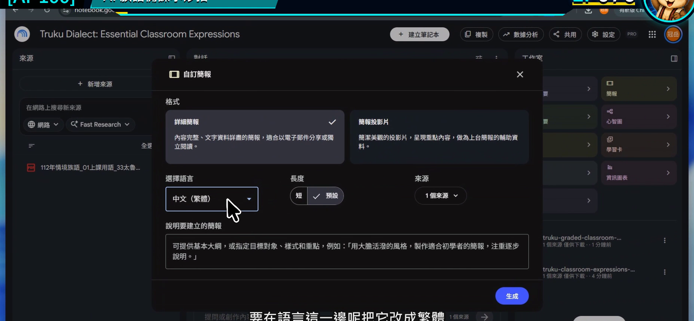
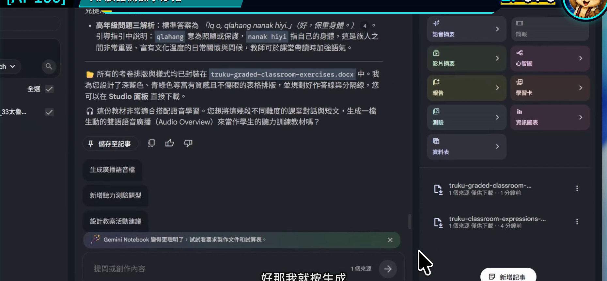

EP076｜生成簡報與教學文件
今天只做一件事
把上一集整理好的教材重點，先做成一份可以繼續修改的課堂簡報，再留下老師自己的教學文件。
完成後會有兩個成果：
- 一份頁數不多、順序清楚的簡報草稿。
- 一份記錄每頁怎麼教的教師備課稿。
今天不是叫 AI 把課全部做完，而是先搭好一堂課的骨架。
先分清楚兩種成品
| 成品 | 誰會看 | 應該放什麼 |
|---|---|---|
| 課堂簡報 | 學生 | 大字、少量重點、圖片或任務指示 |
| 教學文件 | 老師 | 目標、帶課說法、時間、材料、備註 |
如果把教師備註全塞進投影片，學生會看得很累；如果簡報只有漂亮圖片，老師上課時又找不到流程。兩份分開，反而更好用。
今天的示範
用「日常問候」的來源，建立 6 頁簡報：
- 課程主題。
- 看圖暖身。
- 聽老師示範。
- 兩人練習。
- 情境挑戰。
- 今天複習。
族語文字位置先放入老師已核對版本；沒有資料的頁面保留清楚的填寫位置。
開始前先準備
- 一個來源範圍清楚的筆記本。
- 上一集已核對的教學重點。
- 預計上課時間，例如 40 分鐘。
- 先決定簡報最多幾頁。
STEP 1｜先看目前整理結果能不能支撐一堂課
回到對話區，確認已有學習目標、活動順序與教材依據。
畫面要看到
對話結果中已經有可辨認的教學重點，不是空白筆記本。

老師要做
先刪掉不打算放進這一堂課的內容。簡報只有 6 頁，就不要要求塞進整本教材。
完成後確認
你能先用六句話說完六頁要做什麼。
STEP 2｜在工作室選擇簡報
到右側工作室，選擇「簡報」或「投影片」功能。
畫面要看到
簡報建立入口已開啟。

老師要做
如果畫面同時有報告、資訊圖表等選項，今天只選簡報。一次完成一個成果，比同時生成很多檔案更容易檢查。
完成後確認
你已進入簡報設定，不是在建立語音或影片摘要。
STEP 3｜把頁數、用途與結構寫清楚
可直接複製的簡報焦點
請根據目前勾選來源，製作一份給國小中年級使用的 6 頁課堂簡報草稿。
順序為：課程主題、看圖暖身、老師示範、兩人練習、情境挑戰、今天複習。
每頁只放一個主要任務，標題簡短，學生指示使用白話。
族語詞句只使用來源中已提供的原文並保留引用；來源沒有提供時放入【老師填入已核對詞句】。
不要自行加入文化圖紋、服飾說明或來源沒有的圖片敘述。
請另外在每頁備註中寫出老師要說的重點與建議時間。
畫面要看到
設定視窗裡能選擇簡報類型、長度或自訂焦點。

老師要做
把「6 頁」「給誰看」「每頁做什麼」明確寫進去。不要只說「做一份好看的簡報」。
完成後確認
簡報焦點和今天的 40 分鐘課程對得上。
STEP 4｜選擇繁體中文，再檢查文字來源
在語言設定中選擇繁體中文或自己容易編修的語言。
畫面要看到
語言選項已開啟，並選到準備使用的語言。

老師要做
語言設定只控制輸出說明，不代表工具能自動判定族語拼寫。族語內容仍以來源原文為準。
完成後確認
中文說明使用你要的書寫方式，族語位置也已預留。
STEP 5｜生成後，先檢查順序再看設計
按下生成，完成後逐頁查看。
畫面要看到
設定完成並可開始生成簡報。

老師要做
第一輪只檢查：
- 六頁都有出現。
- 順序符合課堂節奏。
- 每頁只有一個主要任務。
- 沒有多出來源未提供的族語內容。
第二輪才檢查字級、圖片、留白與整體風格。
完成後確認
你能照著六頁順序，把這堂課從開始帶到結束。
再把簡報轉成教師備課文件
簡報確定順序後，回到對話區貼入：
請依照剛才 6 頁簡報的順序，整理一份教師備課稿。每一頁列出：教學目的、老師說明重點、學生要做的事、建議時間、需要準備的材料、課堂中要觀察的反應。請保留來源引用，族語詞句不足處以【老師填入】標示。
把結果存入自己的教案文件。這份教師版可以詳細，學生版簡報則維持簡潔。
一頁簡報的檢查方法
每頁問四題：
- 學生一眼知道現在要做什麼嗎？
- 字能在教室後方看清楚嗎？
- 圖片真的幫助理解，還是只是裝飾？
- 老師的詳細備註有沒有留在教師文件，而不是塞在畫面上？
如果結果不理想
簡報頁數太多
說：
請縮成 6 頁，合併重複內容，但保留原本的課程順序。
每頁文字太滿
說：
每頁只保留一個標題、一個學生任務和最多三個短句；詳細說明移到教師備註。
畫面出現不適合的文化元素
移除該圖，改用老師提供的真實照片、核准素材或簡單無文化指涉的情境圖。
族語文字有變動
直接從正式來源貼回已核對版本，不讓工具憑印象修字。
完成前最後檢查
□ 簡報和教師備課稿分開整理。
□ 簡報頁數符合上課時間。
□ 每頁只有一個主要任務。
□ 學生指示簡短、能直接操作。
□ 教師備課稿包含時間、材料與觀察重點。
□ 族語內容已回到正式來源核對。
□ 我會在實際上課前完整播放並試講一次。
今天記住一句話就好
簡報帶學生往前走，教師文件幫老師知道下一步怎麼帶。
官方參考
下一篇｜EP077 用心智圖整理教材與課程架構